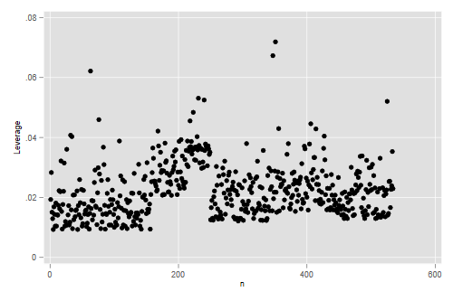

We start by reading the data
. use https://grodri.github.io/datasets/wages, clear (Hourly wages in 1985 CPS extract)
> library(haven)
> wages <- read_dta("https://grodri.github.io/datasets/wages.dta")
> names(wages)
[1] "education" "south" "female" "workexp" "unionmember"
[6] "wages" "age" "ethnicity" "occupation" "sector"
[11] "married"
(a) Fit a linear model to explore how hourly wages depend on education, work experience, union membership, region, occupation and sex. (For simplicity we leave out the other predictors throughout this problem set.)
. regress wages educ workexp union south i.occupation female
Source │ SS df MS Number of obs = 534
─────────────┼────────────────────────────────── F(10, 523) = 24.39
Model │ 4477.32498 10 447.732498 Prob > F = 0.0000
Residual │ 9599.37357 523 18.3544428 R-squared = 0.3181
─────────────┼────────────────────────────────── Adj R-squared = 0.3050
Total │ 14076.6985 533 26.4103162 Root MSE = 4.2842
──────────────┬────────────────────────────────────────────────────────────────
wages │ Coefficient Std. err. t P>|t| [95% conf. interval]
──────────────┼────────────────────────────────────────────────────────────────
education │ .6722878 .0990429 6.79 0.000 .4777169 .8668586
workexp │ .0936955 .0165623 5.66 0.000 .0611587 .1262322
unionmember │ 1.517377 .5083565 2.98 0.003 .5187055 2.516049
south │ -.6885843 .4150423 -1.66 0.098 -1.503939 .1267705
│
occupation │
Sales │ -3.975443 .9141984 -4.35 0.000 -5.771395 -2.179491
Clerical │ -3.347118 .7600163 -4.40 0.000 -4.840178 -1.854058
Service │ -4.148184 .8053377 -5.15 0.000 -5.730278 -2.56609
Professional │ -1.267909 .7270285 -1.74 0.082 -2.696164 .1603461
Other │ -2.799024 .756551 -3.70 0.000 -4.285276 -1.312772
│
female │ -1.845267 .4152299 -4.44 0.000 -2.66099 -1.029544
_cons │ 1.979516 1.710527 1.16 0.248 -1.380831 5.339863
──────────────┴────────────────────────────────────────────────────────────────
. estimates store wages
> m1 <- lm(wages ~ education + workexp + unionmember + south + occupation + female,
+ data = wages)
> summary(m1)
Call:
lm(formula = wages ~ education + workexp + unionmember + south +
occupation + female, data = wages)
Residuals:
Min 1Q Median 3Q Max
-9.484 -2.786 -0.710 1.788 37.376
Coefficients:
Estimate Std. Error t value Pr(>|t|)
(Intercept) -3.36151 1.46609 -2.293 0.02225 *
education 0.90353 0.08142 11.097 < 2e-16 ***
workexp 0.10447 0.01685 6.200 1.14e-09 ***
unionmember 1.44405 0.52270 2.763 0.00593 **
south -0.78659 0.42699 -1.842 0.06601 .
occupation -0.06183 0.12459 -0.496 0.61990
female -2.20661 0.39750 -5.551 4.50e-08 ***
---
Signif. codes: 0 '***' 0.001 '**' 0.01 '*' 0.05 '.' 0.1 ' ' 1
Residual standard error: 4.416 on 527 degrees of freedom
Multiple R-squared: 0.2698, Adjusted R-squared: 0.2615
F-statistic: 32.45 on 6 and 527 DF, p-value: < 2.2e-16
(b) Describe the net effects of education, work experience, and union membership on wages.
The hourly wage is 67 cents higher per year of education for workers with the same observed values of the other variables. Work experience is associated with an increase of 9 cents in the hourly wage per year of experience, everything else being the same. Union members earn $1.52 more per hour than non-union members with the same characteristics
(c) Describe the gender gap after adjusting for the effects of the other variables in the model, and test its significance.
Female workers earn on average $1.85 per hour less than males with the same education, work experience, union membership, region of residence and occupation. The hypothesis that women make the same as comparable men is rejected with a t statistic of -4.4 (P-value of zero to three decimal places.)
(d) Calculate and plot the jack-knifed residuals versus the fitted values. What does the plot indicate? Any outliers?
. predict jack, rstu . predict fv (option xb assumed; fitted values) . scatter jack fv . graph export ps2fig1.png, width(500) replace file ps2fig1.png saved as PNG format
> library(dplyr)
> library(ggplot2)
> wages <- mutate(wages, n = row_number(), jack = rstudent(m1), fv = fitted(m1),
+ lev = hatvalues(m1)) # leverages include for use later
> ggplot(wages, aes(fv, jack)) + geom_point()
> ggsave("ps2fig1r.png", width=500/72, height=400/72, dpi=72)
The plot exhibits the typical megaphone pattern that indicates heteroscedasticity; the variance of the residuals is clearly larger at higher predicted hourly wages. We also see a very clear outlier; a worker whose wages are more than 8 standard deviations higher than expected.
(e) Compute robust standard errors and comment on whether the gender gap is still significant. (R users should make sure to use the “HC1” method.)
. quietly regress wages educ work union south i.occupation female, vce(robust)
. estimates store robust
. estimates table wages robust, se
─────────────┬──────────────────────────
Variable │ wages robust
─────────────┼──────────────────────────
education │ .67228777 .67228777
│ .09904295 .10155895
workexp │ .09369546 .09369546
│ .01656226 .01934914
unionmember │ 1.5173771 1.5173771
│ .50835653 .5257942
south │ -.68858431 -.68858431
│ .41504228 .38976722
│
occupation │
Sales │ -3.9754434 -3.9754434
│ .91419841 1.1030045
Clerical │ -3.3471181 -3.3471181
│ .76001633 1.0812816
Service │ -4.1481844 -4.1481844
│ .80533767 1.1210233
Professio~l │ -1.2679088 -1.2679088
│ .72702849 1.1014587
Other │ -2.7990237 -2.7990237
│ .75655098 1.0819253
│
female │ -1.8452669 -1.8452669
│ .41522986 .44311694
_cons │ 1.9795165 1.9795165
│ 1.7105266 2.0648923
─────────────┴──────────────────────────
Legend: b/se
> library(lmtest)
> library(sandwich)
> robust <- coeftest(m1, vcov = vcovHC(m1, type = "HC1"))
> cbind(coeftest(m1)[,1:3], robust[,2:3])
Estimate Std. Error t value Std. Error t value
(Intercept) -3.3615053 1.46609296 -2.2928323 1.74989163 -1.9209792
education 0.9035295 0.08142273 11.0967729 0.09379948 9.6325641
workexp 0.1044667 0.01685018 6.1997403 0.01928569 5.4168003
unionmember 1.4440454 0.52269625 2.7626856 0.51594119 2.7988566
south -0.7865931 0.42699097 -1.8421773 0.41387499 -1.9005572
occupation -0.0618297 0.12458542 -0.4962836 0.15128362 -0.4087006
female -2.2066130 0.39750111 -5.5512122 0.39970760 -5.5205679
The robust standard errors are somehat larger than the model based estimates, but the gender gap is still significant, with a t ratio in excess of 4.
(a) Fit the model of part 1.a working with the natural logarithm of hourly wages.
. gen logwages = log(wages)
. regress logwages educ union south i.occupation workexp female
Source │ SS df MS Number of obs = 534
─────────────┼────────────────────────────────── F(10, 523) = 27.97
Model │ 51.7302552 10 5.17302552 Prob > F = 0.0000
Residual │ 96.7165671 523 .184926514 R-squared = 0.3485
─────────────┼────────────────────────────────── Adj R-squared = 0.3360
Total │ 148.446822 533 .278511862 Root MSE = .43003
──────────────┬────────────────────────────────────────────────────────────────
logwages │ Coefficient Std. err. t P>|t| [95% conf. interval]
──────────────┼────────────────────────────────────────────────────────────────
education │ .0694744 .0099415 6.99 0.000 .0499442 .0890046
unionmember │ .205853 .0510267 4.03 0.000 .1056106 .3060955
south │ -.1060423 .0416602 -2.55 0.011 -.1878842 -.0242005
│
occupation │
Sales │ -.3504642 .0917634 -3.82 0.000 -.5307343 -.1701941
Clerical │ -.2176053 .0762872 -2.85 0.005 -.3674724 -.0677382
Service │ -.4042984 .0808364 -5.00 0.000 -.5631024 -.2454945
Professional │ -.0432898 .0729761 -0.59 0.553 -.186652 .1000724
Other │ -.2047711 .0759394 -2.70 0.007 -.3539548 -.0555873
│
workexp │ .0105903 .0016624 6.37 0.000 .0073244 .0138562
female │ -.2080284 .041679 -4.99 0.000 -.2899072 -.1261495
_cons │ 1.251034 .1716955 7.29 0.000 .9137368 1.588332
──────────────┴────────────────────────────────────────────────────────────────
> m2 <- lm(log(wages) ~ education + workexp + unionmember + south + occupation + female,
+ data = wages)
> summary(m2)
Call:
lm(formula = log(wages) ~ education + workexp + unionmember +
south + occupation + female, data = wages)
Residuals:
Min 1Q Median 3Q Max
-2.1249 -0.2853 -0.0056 0.2953 1.9778
Coefficients:
Estimate Std. Error t value Pr(>|t|)
(Intercept) 0.705778 0.147282 4.792 2.15e-06 ***
education 0.094708 0.008180 11.579 < 2e-16 ***
workexp 0.011611 0.001693 6.859 1.95e-11 ***
unionmember 0.194787 0.052509 3.710 0.00023 ***
south -0.111674 0.042895 -2.603 0.00949 **
occupation 0.003969 0.012516 0.317 0.75129
female -0.229623 0.039932 -5.750 1.51e-08 ***
---
Signif. codes: 0 '***' 0.001 '**' 0.01 '*' 0.05 '.' 0.1 ' ' 1
Residual standard error: 0.4437 on 527 degrees of freedom
Multiple R-squared: 0.3012, Adjusted R-squared: 0.2932
F-statistic: 37.86 on 6 and 527 DF, p-value: < 2.2e-16
(b) Describe the coefficients of education, work experience and union membership in terms of the effects of these variables on wages (not on log wages).
. mata b = st_matrix("e(b)")
. mata b[1..3] \ exp(b[1..3])
1 2 3
┌──────────────────────────────────────────────┐
1 │ .0694743579 .2058530126 -.1060423388 │
2 │ 1.071944574 1.228572606 .8993865683 │
└──────────────────────────────────────────────┘
> vars = c("education","workexp","unionmember")
> exp(coef(m2)[vars]) - 1
education workexp unionmember
0.09933768 0.01167847 0.21505242
We estimate the returns to education as 7.2% higher wages per year of
education, everything else being equal. Workers with more experience
make on average about one percent more per year of experience, adjusting
for everything else. Union members make on average 23% more per hour
than non-union workers with the same observed characteristics. The first
two coefficients are small enough to interpret directly as percentages,
but the approximation is less accurate for the union coefficient. You can see all coefficients in exponentiated form using
reg, eform(e(b)).
(c) Describe the gender gap as estimated in this model and test its significance.
The coefficient of -0.208 corresponds to a relative effect of 0.812, indicating that female workers make on average 81 cents on the dollar, compared to males with the same education, work experience, union membership, region of residence and occupation. The t test of -4.99 on 523 d.f. is highly significant, indicating that the difference is too large to be due to chance.
(d) Check whether the returns to work experience are the same for males and females.
We add an interaction between the indicator for females and work experience and test its significance
. gen workXfem = workexp * female
. regress logwages educ workexp union south i.occupation female workXfem
Source │ SS df MS Number of obs = 534
─────────────┼────────────────────────────────── F(11, 522) = 26.11
Model │ 52.6813635 11 4.78921486 Prob > F = 0.0000
Residual │ 95.7654588 522 .183458733 R-squared = 0.3549
─────────────┼────────────────────────────────── Adj R-squared = 0.3413
Total │ 148.446822 533 .278511862 Root MSE = .42832
──────────────┬────────────────────────────────────────────────────────────────
logwages │ Coefficient Std. err. t P>|t| [95% conf. interval]
──────────────┼────────────────────────────────────────────────────────────────
education │ .0714044 .0099382 7.18 0.000 .0518806 .0909282
workexp │ .0140507 .0022475 6.25 0.000 .0096353 .018466
unionmember │ .1964052 .0509929 3.85 0.000 .0962287 .2965817
south │ -.110057 .041532 -2.65 0.008 -.1916474 -.0284666
│
occupation │
Sales │ -.344788 .0914325 -3.77 0.000 -.5244089 -.1651672
Clerical │ -.2024009 .0762767 -2.65 0.008 -.352248 -.0525538
Service │ -.3819969 .0811085 -4.71 0.000 -.5413362 -.2226577
Professional │ -.0367114 .0727433 -0.50 0.614 -.1796169 .1061942
Other │ -.1890991 .07595 -2.49 0.013 -.3383042 -.039894
│
female │ -.0858201 .0678538 -1.26 0.207 -.21912 .0474799
workXfem │ -.0069357 .0030461 -2.28 0.023 -.0129198 -.0009516
_cons │ 1.158463 .1757792 6.59 0.000 .8131414 1.503784
──────────────┴────────────────────────────────────────────────────────────────
> m3 <- update(m2, ~ . + workexp:female)
> summary(m3)
Call:
lm(formula = log(wages) ~ education + workexp + unionmember +
south + occupation + female + workexp:female, data = wages)
Residuals:
Min 1Q Median 3Q Max
-2.15124 -0.28771 -0.00452 0.29728 1.90072
Coefficients:
Estimate Std. Error t value Pr(>|t|)
(Intercept) 0.616172 0.149806 4.113 4.53e-05 ***
education 0.095662 0.008134 11.760 < 2e-16 ***
workexp 0.015884 0.002273 6.989 8.39e-12 ***
unionmember 0.183934 0.052317 3.516 0.000476 ***
south -0.116439 0.042654 -2.730 0.006549 **
occupation 0.005904 0.012455 0.474 0.635698
female -0.073762 0.068422 -1.078 0.281508
workexp:female -0.008700 0.003111 -2.796 0.005362 **
---
Signif. codes: 0 '***' 0.001 '**' 0.01 '*' 0.05 '.' 0.1 ' ' 1
Residual standard error: 0.4408 on 526 degrees of freedom
Multiple R-squared: 0.3114, Adjusted R-squared: 0.3023
F-statistic: 33.99 on 7 and 526 DF, p-value: < 2.2e-16
The interaction term is significant at the conventional five percent
level. The results show that hourly wages are 1.4% higher per year of
experience for males, but only 0.7% higher per year of experience for
females with the same characteristics. In other words the estimated
returns to experience for women are half those of men. (I kept work
experience uncentered because 0 work experience is meaningful and
interesting. Had I centered it I would have obtained the gender gap at
mean experience as the “main” effect of female.)
(e) How does the result of part (d) affect the conclusions of part (c)? Do we still have a gender gap?
. sum workexp
Variable │ Obs Mean Std. dev. Min Max
─────────────┼─────────────────────────────────────────────────────────
workexp │ 534 17.8221 12.37971 0 55
. di exp(_b[female]) - 1, exp(_b[female] + r(mean) * _b[workXfem]) - 1
-.08224064 -.18895215
> mwe <- mean(wages$workexp)
> b <- coef(m3)
> c(exp(b["female"]), exp(b["female"] + mwe * b["workexp:female"])) - 1
female female
-0.0711070 -0.2045184
Yes, this result affects our conclusions. In part (c) we estimated an average gender gap across the entire range of experience. In fact the gap is smaller among new workers, but increases over time. Among new workers women make 8% less than comparable men, but the gap increases by 0.7 percentage points each year, so at the mean work experience of 17.8 years it has become 19%.
(a) Calculate and plot the jack-knifed residuals versus fitted values for the final model using log wages. What does the plot tell us? Any outliers?
. predict ljack, rstu . predict lfv (option xb assumed; fitted values) . scatter ljack lfv . graph export ps2fig2.png, width(500) replace file ps2fig2.png saved as PNG format
> wages <- mutate(wages, ljack = rstudent(m3), lfv = fitted(m3))
> ggplot(wages, aes(lfv, ljack)) + geom_point()
> ggsave("ps2fig2r.png", width=500/72, height=400/72, dpi=72)
The graph is much improved, although there is still a hint of lower variance at very low wages. The outlier we noticed before has moved in a bit, but now we have a worker whose relative wages are almost six standard deviations lower than predicted.
(b) Run a quick Q-Q plot to check the normality of the residuals. How does the graph look? (No formal test required.)
To use ggplot you need to compute the
quantiles “by hand” as shown in the R logs. We’ll do it the easy way
with qqnorm().
. qnorm ljack . graph export ps2fig3.png, width(500) replace file ps2fig3.png saved as PNG format
> png("ps2fig3r.png", width=500, height = 400, units = "px")
> qqnorm(wages$ljack)
> dev.off()
pdf
2
We see that, except for the two outliers just noted, the observations
are not far from normality. These two, however, are so far out that
almost any test would reject the assumption of normal residuals. (You may try swilk or sktest as
test of normality.)
(c) Calculate the leverages. Do we have any observation with high leverage? Identify the observation with the highest leverage. Can you tell why it has potential influence?
. predict lev, lev . gen n = _n . scatter lev n . graph export ps2fig4.png, width(500) replace file ps2fig4.png saved as PNG format
> ggplot(wages, aes(n,lev)) + geom_point()
> ggsave("ps2fig4r.png", width=500/72, height=400/72, dpi=72)

We see three observations with comparatively large leverages, but none of these is large enough to cause concern. Let us list the three largest ones:
. list n wages educ workexp female lev if lev > .06
┌──────────────────────────────────────────────────────┐
│ n wages educat~n workexp female lev │
├──────────────────────────────────────────────────────┤
63. │ 63 7 3 55 0 .0621579 │
347. │ 347 6 4 54 0 .0672973 │
351. │ 351 3.75 2 16 0 .0718959 │
└──────────────────────────────────────────────────────┘
. sum educ
Variable │ Obs Mean Std. dev. Min Max
─────────────┼─────────────────────────────────────────────────────────
education │ 534 13.01873 2.615373 2 18
> wages |> filter(lev > .06) |> + select(n, wages, education, workexp, female, lev) # A tibble: 0 × 6 # … with 6 variables: n <int>, wages <dbl>, education <dbl>, workexp <dbl>, # female <dbl>, lev <dbl> > mean(wages$education) [1] 13.01873
The highest leverage is a male worker with only two years of education. He has leverage because his education is substantially below the mean, and gains additional leverage because this is combined with comparatively low work experience. (You may find instructive plotting education versus work experience.)
(d) Calculate the Cook’s distances. Do we have any observations that stand out? What do you think would happen to the gender gap if we refit the model omitting the observation with the highest actual influence? (No need to do the fit.)
. predict cook, cook . scatter cook n . graph export ps2fig5.png, width(500) replace file ps2fig5.png saved as PNG format
> wages <- mutate(wages, cook = cooks.distance(m3))
> ggplot(wages, aes(n, cook)) + geom_point()
> ggsave("ps2fig5r.png", width=500/72, height=400/72, dpi=72)
None is close to one. Many exceed the 4/(n-p) rule of thumb. But there are two that are much larger than all the others:
. gen pwages = exp(lfv)
. list n wages pwages educ occup workexp female cook if cook > .04
┌─────┬───────┬──────────┬──────────┬────────────┬─────────┬────────┐
171. │ n │ wages │ pwages │ educat~n │ occupation │ workexp │ female │
│ 171 │ 44.5 │ 7.999821 │ 14 │ Management │ 1 │ 1 │
├─────┴───────┴──────────┴──────────┴────────────┴─────────┴────────┤
│ cook │
│ .0437665 │
└───────────────────────────────────────────────────────────────────┘
┌─────┬───────┬──────────┬──────────┬────────────┬─────────┬────────┐
200. │ n │ wages │ pwages │ educat~n │ occupation │ workexp │ female │
│ 200 │ 1 │ 10.51214 │ 12 │ Management │ 24 │ 0 │
├─────┴───────┴──────────┴──────────┴────────────┴─────────┴────────┤
│ cook │
│ .0634495 │
└───────────────────────────────────────────────────────────────────┘
> wages <- mutate(wages, pwages = exp(lfv))
> wages |> filter(cook > 0.04) |>
+ select(n, wages, pwages, education, workexp, female, cook)
# A tibble: 2 × 7
n wages pwages education workexp female cook
<int> <dbl> <dbl> <dbl> <dbl> <dbl> <dbl>
1 171 44.5 6.65 14 1 1 0.0459
2 200 1 8.60 12 24 0 0.0472
The largest one is a male manager with 23 years of experience who only makes $1 an hour, when we expect $10.51. Were we to omit this observation we would expect the gender gap to increase. The second one is a female manager with almost no experience who makes $44.5. Omitting her would also increase the gender gap. They would , however, have opposite effects on the interaction term. Interestingly, none of the high leverage cases ended up having actual influence on the fit.
(e) Did we need to transform the data? Was the natural logarithm a good transformation? Explore these questions in a Box-Cox framework by plotting the profile log-likelihood for parameters in the range (-2,2) and formally testing for the identity and log transformations.
Turns out boxcox doesn’t allow
factor variables, so we compute the occupation dummies and the
interaction term ourselves. The code below uses value labels to name the
occupation dummies.
. forvalues cat = 2/6 {
2. local name : label (occupation) `cat'
3. gen occ_`name' = occupation == `cat'
4. }
We now follow the procedure outlined in the Stata logs to plot the profile log-likelihood.
. gen lambda = .
(534 missing values generated)
. gen ll = .
(534 missing values generated)
. local xvars educ workexp union south occ_* female workXfem
. local i = 0
. forvalues p = -2(0.5)2 {
2. quietly boxcox wages `xvars', iterate(0) from(`p',copy)
3. local i = `i' + 1
4. quietly replace lambda = `p' in `i'
5. quietly replace ll = e(ll) in `i'
6. }
. graph twoway mspline ll lambda in 1/9, bands(9) ytitle(Profile log-lik)
. graph export ps2fig6.png, width(500) replace
file ps2fig6.png saved as PNG format
We use the MASS library as shown in the
R logs
> library(MASS)
> m4 <- update(m1, ~ . + workexp:female)
> png("ps2fig6r.png", width=500, height=400, unit="px")
> bc <- boxcox(m4)
> dev.off()
pdf
2


You may want to run the boxcox
command to see the tests in the summary table at the end. I’ll run it
quietly to get the estimate and log-likelihood and then compute the test
from the output I already have:
. quietly boxcox wages `xvars'
. di _b[theta:_cons], e(ll)
-.01530901 -1398.4514
. quietly gen chisq = -2*(ll - e(ll))
. list lambda ll chisq if inlist(lambda, -1, 0, 1)
┌───────────────────────────────┐
│ lambda ll chisq │
├───────────────────────────────┤
3. │ -1 -1543.741 290.5793 │
5. │ 0 -1398.482 .0612271 │
7. │ 1 -1526.194 255.4846 │
└───────────────────────────────┘
Obviously the maximum is not far from the log
transformation, but boxcox doesn’t tell us exactly where.
We can find it using optimize()
> f <- function(lam) -boxcox(m4, lambda=lam, plotit=FALSE)$y > opt <- optimize(f, interval = c(-1,1)) > opt $minimum [1] -0.0211955 $objective [1] 1235.376
So the best transformation is -0.015 with a log-lik of 1217.997. The main use of this information is for testing selected transformations.
> tests <- data.frame(lambda = c(-1, 0, 1)) > g <- function(lam) 2 * (f(lam) - opt$objective) > tests <- mutate(tests, chisq = g(lambda)) > tests lambda chisq 1 -1 280.3781596 2 0 0.1150855 3 1 254.6296607
The results show that we would soundly reject the hypothesis that no transformation is needed, with a chi-squared of 255.48 on one d.f. On the other hand we can’t reject the log transformation, with a chi-squared of 0.06 on one d.f., and very close to the optimal transformation, which corresponds to the power -0.015.